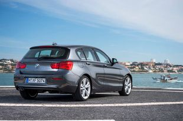
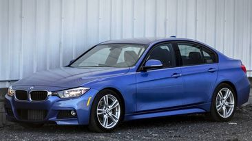
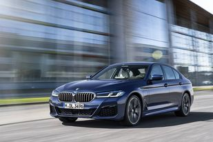
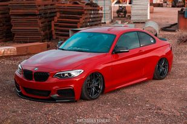

-
Seria 1 ( F20 / F21 ) este nivelul de intrare la gama de modele actuale a BMW. Este produsă în stiluri de caroserie cu 3 uși și 5 uși hatchback.

-
Seria 2 ( F22 / F23 ) este coupe-urile și convertibilele la nivel de intrare BMW. Gama Seria 2 constă, de asemenea, din stilurile de caroserie "Active Tourer".

-
Seria 3 ( F30 / F31 / F34 ) este produsă în stil sedan cu 4 uși, vagon cu patru uși (estate) și stiluri de caroserie rapidă cu cinci uși ("Gran Turismo").

-
Seria 5 ( G30 / G31 ) este produsă în stiluri de caroserie și vagon. O varianta sedan cu ampatament lung (G38) este de asemenea vândută în China.
